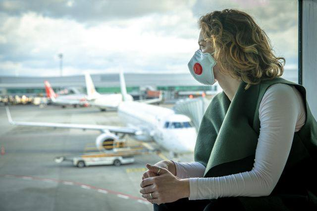

哈皮JON
专注于时事背后的故事
疫情3大受影响行业
May 18, 2020
航空业
自全球各国疫情防范措施推出后，其中禁止国人出国与外国人入境的条款致使世界航空需求大减，大量飞机被迫停留在机场。在航空公司收入锐减的环境下，就算是闲置的飞机也还需要维持定期的保养，同时需要兼顾员工的开支费用。此外，大量的航班取消和退款也使得各航空公司的现金流面临枯竭。因此，航空业也成为了其中一个被疫情重创的行业。
在欧洲，英国航空（British Airways）也已经和其飞行员另外达成了一个工作协议，其航空公司的飞行员将在今后两个月薪水减半。目前，英航也已经停止了在盖特威克机场(Gatwick Airport)和伦敦城市机场(London City Airport)的所有运营。
旅游业
今年旅游业者错过了中国其中一个最重大的旅游季节---春节黄金周，可以想象相关中小业生意收入将备受打击。过去马来西亚旅游旺季大约会有有3600至4000个中国游客为主的旅游团到来旅游，但由于疫情的爆发导致大量旅游团的取消，已交付的酒店餐厅定金一概收不回，让旅游业者损失惨重。其中有的公司要求员工强行放假，有的甚至在网上出售旅游巴士帮助短时间的资金周转，行业的严峻挑战可见一斑。
汽车行业
因为这一次的肺炎疫情造成失业率上升和家庭收入的减少，人民口袋的钱少了，势必间接影响疫情过后的消费情绪。汽车行业也因为全球行动管制下同时面对订单减少和供应链受阻的情况，接下来一年的汽车销售量相信无法看到漂亮的成长甚至可能萎缩。图为过去一年汽车销量，2020年至今销量已开始大幅下滑。